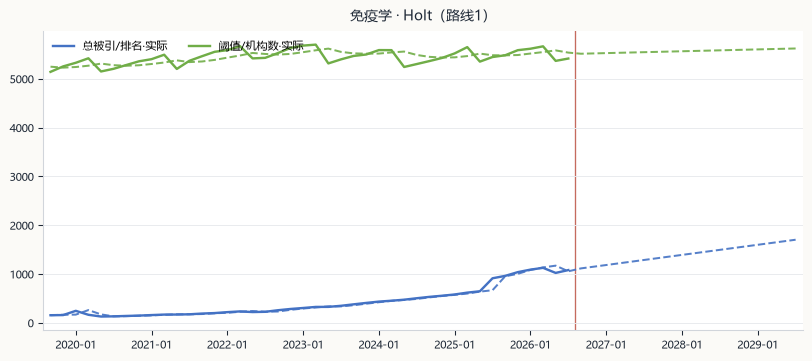
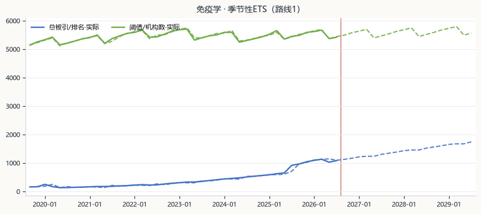

Holt趋势模型
当前选用3.47%滚动 MAPE
3.05%拟合 MAPE
未过线首次过线
通过运行状态

报告预测章用哪套模型，在这里按任务期次设置；学科板和试跑使用最新完整派生产物，供当前查看和比较。
8 个潜力学科两条路线一眼看完：接近度（离门槛还有多远）、预计过线期、用的模型与它的滚动误差。 「接近度」是百分数点值；过线是滚动监测信号，不等同于正式入榜时间。
这一板的模型是预测阶段的选模记录（逐期滚动比较的结果），不是报告最终采用的模型—— 报告用哪套，看下面 03 的「V1 推荐」与你的选择。
源：预测选模与过线.md；t1/t2/t3 空串＝该窗口内未过线；数值为百分数点值（如 37.62 表示 37.62%）
▼ 视口之外还有：02 全模型预测图（五张图卡 + 四个下拉 + 读数列）· 03 本期用哪个模型（期次区 + 路线页签 + 8 行表 + 保存行）· 04 口径说明（5 条）· 页尾「说明·全站仅此一份」。当前首屏可见 … 字（本复刻栏）；真机 1440 宽实测 656。
只切「学科板」。下面 02、03 不跟——切完这一板变了，图区还停在旧路线。
只切「试跑」。真机实测：切了路线后图区清空、只剩「这组参数还没跑过」，要手动再点运行——「五模型图缺图」的观感就出在这里；切回原路线才秒回缓存。
在 02 里对着图改的选（按 02 的路线），到 03 却按另一条路线的页签保存——两边页签不同步，就是「改 A 存 B」。同一屏期次说法三个（任务期次 / 最新完整预测数据 / 实际输出期次），加页头与基线期次共五个。
真机实测：单模型卡头写「数据来源 202609 期派生产物」、表格全展开、零按钮；五图卡头是「202609 期数据」+ 标签 + 「选用此模型」+ 折叠。卡题、标签、按钮、折叠全不同。
先看图，再定稿
当前 季节性ETS ·


改完统一点页头「保存本期选择」；跑不出来的模型自动退回 V1 推荐。
与旧版同一块内容（8 科接近度 / 所选模型 / 滚动误差 / 预计过线），随页头「路线」一起切换；口径为预测选模记录，不是报告最终采用。
被引路线 / 排名路线怎么算「过线」；SARIMA 阶数与状态空间方差只用初始 30 期冻结；正式验证范围是一步预测，页面多期结果为递推外推；预测过线是滚动监测信号，不等同正式入榜时间或概率。
审过即进 React（票 13）：浏览器端抽两条验证——① 在 02 改选后到 03 保存，保存内容与该路线一致；② 切路线后图区自动恢复（缓存或重跑），不出现空图提示。改前首屏（真机 1440 宽）656 字 → 改后首屏 … 字（本页计量、含上方两栏差异说明）。左栏四处特写 A–D 即票 13 的四条改动依据。